It starts with the side-effect record and ends with the whole health record in the patient's hands.
I am Min-Gyu Kang, Associate Professor in the Department of Internal Medicine at Chungbuk National University College of Medicine and an allergist at Chungbuk National University Hospital. I have seen patients here since March 2015 and have been an associate professor since September 2023. I am board-certified in Allergy and Clinical Immunology and certified in medical informatics, and I have served as Director of the Regional Pharmacovigilance Center and Director of the Medical Information Center.
A patient who has had an adverse drug reaction is prescribed the same drug again at another hospital. The history lives on a paper card and in memory, so it breaks the moment the hospital or the pharmacy changes. DUR, the prescription check run by HIRA, holds no individual allergy history either. Every patient is different, yet the prescription and the medication counseling are the same.
The body that reacted belongs to the patient, but the record belongs to the hospital, so the patient falls back on memory. Put the information in the patient's hands and everything changes. The patient checks it first, then shows it to the hospital and the pharmacy. When the record follows the person, the prescription fits that person, and the patient takes the medicine with confidence.
The starting point is the side-effect record. From there it widens to allergy information, and in time patients will take their whole health record and use it to manage their health. Then the patient walks into the clinic holding their own chart.
This began in 2017 as a patient safety study funded by the Ministry of Health and Welfare, and in 2018 we released the Drug Allergy Alert app (Allimi). Patients check on their phone which drugs to avoid and which are safe to take, then scan the QR code on a prescription to cross-check it. Next came the QR drug safety card, and 709 patients at 9 university hospitals have registered on the My ADR platform.
For a record to cross from one hospital to the next, the form has to be the same first. With the consortium of Prof. Hye-Ryun Kang at Seoul National University Hospital we set the standard data elements and refined the allergy resource of HL7 FHIR, the specification hospitals use to exchange health information. After 3 hospitals exchanged 914 records, the work moved onto the Health Information Highway and reached 8 hospitals.
When a patient brings a downloaded record, a rule engine and several large language models (LLMs) draft a safe medication guide and the clinical team reviews it. Clinical decision support (CDSS) starts with the patient. Across 3 institutions, 111 patients registered and 108 reports went out to them. They rated their willingness to recommend it 4.95 out of 5.
I am spending a year from March 2026 as a Visiting Researcher at Harvard Medical School and at CAMCA in the Department of Radiology, Massachusetts General Hospital (PI Kyungsang Kim). Having brought large language models into a hospital information system, I am now working out how to bring medical AI to the record a patient carries.
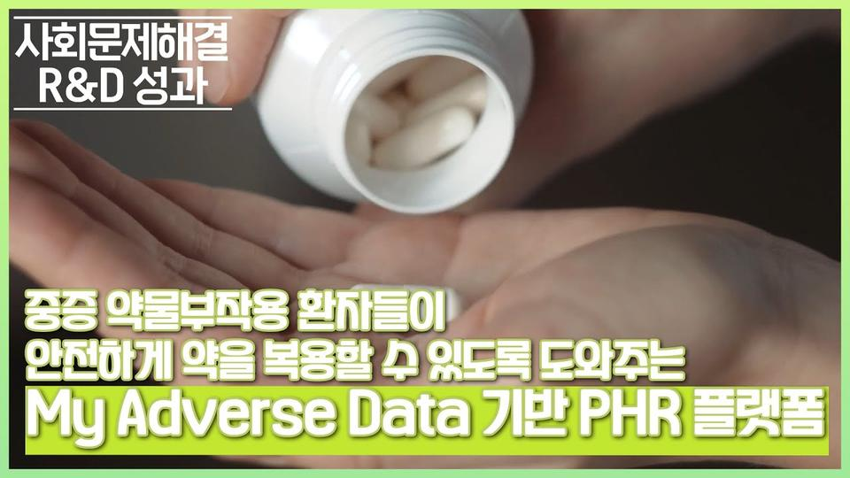
A PHR platform built on My Adverse Data that helps patients with severe adverse drug reactions take their medicines safely1 min 56 sec · Social Problem Solving Platform · 2022.2One wrong pill can bring on allergic shock. Two minutes on checking your own side-effect record and handing it to the hospital and the pharmacy.Watch on YouTubeA problem I meet in the clinic with a drug allergy patient becomes a standard for sharing information, then a tool in the patient's hand, then a question for pharmacovigilance and clinical research. The answer comes back as a feature of the hospital system.
A drug allergy confirmed at one hospital is invisible at the next hospital or pharmacy. A patient who had anaphylaxis to cefaclor really does get the same class of antibiotic again at another institution. The HIRA DUR system does not carry an individual allergy history, and a paper drug safety card is hard for a patient to keep at hand at all times.
The culprit drug, the symptoms, causality, and the contraindicated, caution and safe-to-take drug groups all fit on a single standard form (ver1.0, 2022), which we mapped to the FHIR AllergyIntolerance resource (KR Core, FHIR R4, 2024). We also built JSON and Excel conversion tools so implementers can work with the standard resource.
With the consortium led by Prof. Hye-Ryun Kang of Seoul National University Hospital, we built a pilot system that shares drug allergy records between hospitals (phase 1, 2023.10-2024.4; phase 2, migration to the Health Information Highway, 2024.8-2025.3). I set the standard data elements and value domains and refined the FHIR AllergyIntolerance profile. The work won an Excellence Award at the 2023 Health Information Exchange best-practice contest.
We issue the card in a standard form, and a single QR code opens it at any hospital or pharmacy (6 institutions). We also demonstrated an Allergy Passport that carries the same information into GPT and explains it in other languages. 2024 Korean Society for Patient Safety President's Award.
Patients bring records they downloaded from the Health Information Highway (MyHealthWay) to the hospital, and we connected the Safe Medication CDSS so that it reasons from those records (MOHW R&D 2023-2025). I proposed drug allergy elements for the allergy and intolerance section of the Health Information Highway.
This work puts a patient's own side-effect data in the patient's hands. Check it, show it, take it with confidence: I built those three steps as apps, cards, a platform, and a decision support system.
The app carries the contraindicated, caution and safe-to-take drugs confirmed in the allergy clinic, so a patient can search by drug name or scan the QR code on a prescription and get an answer tailored to them. 2018 Smart App Award Korea Grand Prize, Google Play 5.0.
We ran myadr.care, a platform that passes side-effect information between hospitals, at 9 university hospitals. Cards went out through the patient app and KakaoTalk alert messages.
A rule engine computes polypharmacy and drug allergy risk, and a multi-agent LLM writes the patient-facing safe medication guide. Field tested at 3 institutions, 111 patients enrolled, 108 reports.
This line of work turns hospital electronic medical records into a common data model to find drug safety signals, then measures their scale and risk factors with epidemiology.
The Common Data Model (CDM) at Chungbuk National University Hospital began in 2015, when I joined a commissioned study of the Korea Institute of Drug Safety and Risk Management (KIDS) as the site lead. In 2017 I developed the analysis algorithms and a way to link a hospital EMR common data model with the Korea Adverse Event Reporting System (KAERS). Within that same line of work, the Korean multicenter active pharmacovigilance system (K-Sentinel/K-CDM), I took charge of moving hospital data into the standard structure. In 2019 I used the CDM to assess oseltamivir adverse reactions, and in 2020, as Principal Investigator, I ran the project that built a hospital electronic medical record common data model and set the backbone of our in-house CDM. Since then we have served as an analysis site in the KIDS MOA-CDM network (a hospital EHR based common data model, codebook 1.2 to 1.4), feeding our hospital data into multicenter pharmacovigilance analyses. Since 2021 I have led Chungbuk National University Hospital as a participating institution in the Medical Data-Driven Hospital program (MOHW) under the Seoul National University Hospital consortium, rebuilding the CDM on the OMOP standard and widening its domains.
Outside the CDM, I have kept measuring the scale and outcomes of adverse drug reactions in real-world data. We surveyed across multiple centers what share of emergency department visits adverse drug events account for and what they cost, and that work produced a series of papers, including a first-author paper in PLOS ONE. We also developed and validated a trigger tool that finds drug-related emergency visits automatically. For severe cutaneous adverse reactions we analyzed a nationwide multicenter registry together with individual case safety reports to map the phenotypes and direct costs of each culprit drug, and I took part in genetic risk factor studies: HLA-B*58:01 pre-screening for allopurinol, HLA-B*13:01 for carbamazepine, and HLA-DRB1*15:02 for iodinated contrast media. The work has since widened to angiotensin receptor blockers and drug-induced liver injury, to oseltamivir, and to spontaneous reporting data on adverse drug reactions in older adults.
Clinical research that starts with the patients in my clinic. It runs in four branches: thesis research, epidemiology and biomarkers, patient care tools, and clinical trials.
My doctoral work read the pathophysiology of asthma out of gene expression in peripheral blood mononuclear cells. In the transcriptomes of patients during acute exacerbation I looked for shared gene modules and regulatory networks, and ex vivo dexamethasone experiments identified the molecular signature of poor steroid response. The same line runs on to a 2016 young investigator grant that approached the mechanism of steroid resistance in severe asthma through metabolomics, and to a 2022 Respiratory Research paper that split the immune phenotypes of asthma by peripheral blood transcriptomic clusters.
I have also run asthma studies that tie epidemiology to the clinic: the epidemiology of adult asthma in Asia, how age of onset shapes the disease, phenotypes of asthma in older adults, the link between chronic rhinosinusitis, nasal polyps and asthma onset, biomarker work on the airway microbiome and the lung virome, and a multifaceted intervention to cut exacerbations in older patients with asthma.
I have spent years building digital tools that let patients manage asthma and allergic disease themselves. It began with a 2013 abstract on a smartphone-based asthma action plan, and in 2016 I reported the feasibility of an app-based action plan and monitoring in Asia Pacific Allergy. In a 2020 planning study for the Korea Health Promotion Institute I designed a smart healthcare service model for chronic respiratory and allergic disease in primary care. From 2021 I served as Co-Principal Investigator on the Ministry of Trade, Industry and Energy program to build an AI technology support platform for the wellcare industry. In 2025 we rolled out SMART+ER, a counseling chatbot for patients with allergic rhinitis, across the hospital. We had first reported it in a European Respiratory Journal 2024 abstract.
In the Division of Allergy and Clinical Immunology at Chungbuk National University Hospital I have been Principal Investigator on 12 clinical trials in asthma and allergic disease. They range from phase 2 and phase 3 trials of biologics and inhaled therapies for severe asthma to post-marketing surveillance and investigator-initiated phase 4 studies. Some of the results became a first-author paper in Scientific Reports 2025, a first-author paper in Nutrients 2020, and a co-authored paper in Lung 2025.
As a physician certified in medical informatics (CPBMI), I build AI into hospital work and research. In 2025, as Director of the Medical Information Center, I connected an LLM to the hospital information system.
A multi-agent system that writes a patient-specific guide from that patient's own side-effect data, clinical skills with a "no guessing" rule, and evaluation by an LLM judge. I compared commercial models with small open models on the same metrics.
Tools I built because my clinic and my research needed them: medication counseling image generation wired together in n8n, a FHIR converter, allergy test result reports, OMOP CDM ETL, and a pre-visit intake system.
Since 2026 I have worked at CAMCA, in the Department of Radiology at Harvard Medical School and MGH, on foundation models, large language models, and diffusion models for medical imaging and clinical data.
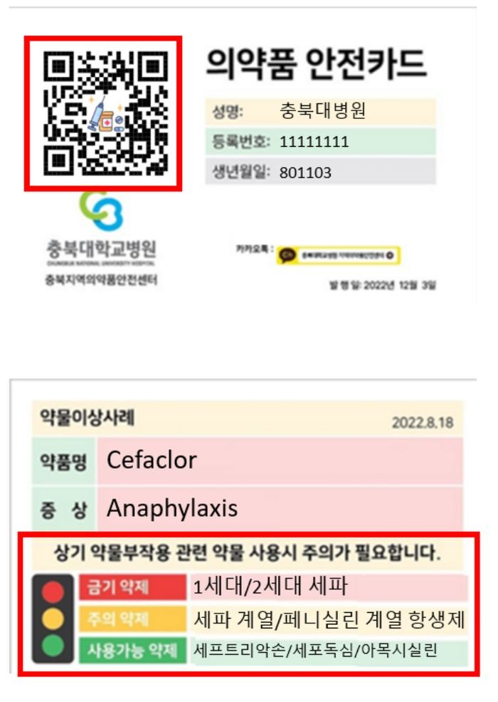
I am a Visiting Researcher at CAMCA (Center for Advanced Medical Computing and Analysis, PI Kyungsang Kim), in the Department of Radiology at Harvard Medical School and Massachusetts General Hospital. The group works on foundation models, large language models, and diffusion models for medical imaging and clinical data. Here I am preparing my next studies, joining drug safety data to hospital AI.
This is what grew out of "Personalized DUR in My Hand" in 2017: apps, digital cards, hospital CDSS, MyData, and LLMs. On featured projects, "Details" opens the attachment form, "Demo" shows the real screens and video, and the press mark leads to the coverage. The three steps follow in order: check it, show it, and take it with confidence.
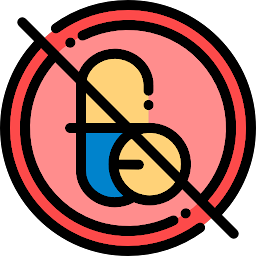
A personalized app for preventing drug allergy. A mobile drug safety card, an action plan written in plain words, drug search, and prescription QR scanning. Google Play rating 5.0 from 87 reviews, more than 500 downloads. Grand Prize in the health and medicine category, 2018 Smart App Award Korea.
A one-page summary of a patient's drug side effects, opened with a single QR code at any hospital or pharmacy. Cards are issued at 6 institutions, and the information sharing platform (myadr.care) has 709 people registered across 9 university hospitals (as of 2024.12). We also load the same information into a GPT, so patients can ask it questions as if they carried ‘my allergy passport’. 2024 President's Award, Korean Society for Patient Safety.
With Prof. Hye-Ryun Kang's team at Seoul National University Hospital, this pilot let a drug allergy record confirmed at one hospital travel to another over the Health Information Exchange system. I set the standard for drug allergy information sharing (standard form and value domains) and upgraded the HL7 FHIR AllergyIntolerance profile. 2023 Excellence Award, Health Information Exchange best-practice contest.
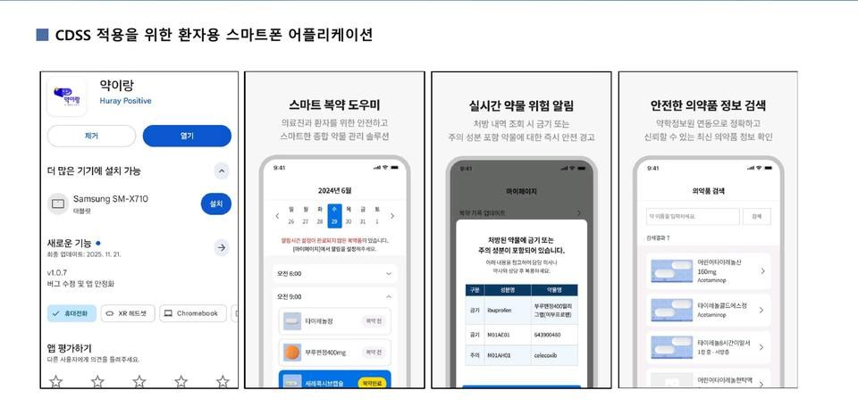
A patient downloads their own diagnosis, medication, lab and checkup records from the ‘My Health Record’ app and uploads them to the SMART DUR CDSS at myadr.care. The system screens polypharmacy risk against drug interactions, potentially inappropriate medications for older adults, anticholinergic burden and the STOPP criteria, then writes a medication guide for that patient. If there is a history of side effects, it adds an allergy report. A clinician reviews it and sends it to the patient app Yagirang. 3 institutions, 111 patients registered, 108 reports.
“A precision medicine platform built on each patient's own experience with medicines.” I designed the My ADR platform as an extension of the Drug Allergy Alert app, and took it through the CBNU lab startup program, KAIST Open Venture Lab and the Pre-Startup Package.
| Period | Project | Role |
|---|---|---|
| 2023.2 - 2025.12 | Development and validation of a MyData-based safe medication CDSSA three-year project that built and field-tested a clinical decision support system (CDSS) letting patients carry their own adverse drug reaction records as MyData and take their medicines safely. The scope grew to include MyHealthWay linkage and LLM-generated medication counseling text for each patient. | Principal Investigator |
| 2022.4 - 2024.12 | Building a patient-centered system for active prevention of adverse drug reactionsA project that moved past the limits of the paper drug safety card and built an active prevention system in which patients hold their own adverse drug reaction history digitally and can show it at any hospital or pharmacy. It expanded to 9 hospitals, including 4 Regional Pharmacovigilance Centers and 5 sites from the Korean Society of Health-System Pharmacists, and also produced standard data elements for information sharing and proposed amendments to the law. | Principal Investigator |
| 2022.7 - 2023.2 | Development of a MyData safe medication system based on personalized drug reaction informationA startup growth R&D project that developed a system managing each person's drug reaction information as MyData to support safe medication use. | Principal Investigator |
| 2021.5 - 2021.12 | Development of an AI medication guidance and VR medication counseling platform based on patients' own side effect dataAn IP-R&D project that set the technology and patent strategy for AI medication guidance and a VR medication counseling platform built on patients' own side effect data. | Principal Investigator |
| 2020.9 - 2021.5 | Planning study for developing and validating a primary care based smart healthcare service model for chronic respiratory allergic diseaseA planning study that designed a smart healthcare service model for managing chronic respiratory allergic diseases such as asthma and allergic rhinitis in local clinics, and laid out the plan for field validation. | Principal Investigator |
| 2020.6 - 2022.2 | Development of a MyData-based, patient-centered system for preventing adverse drug reactionsA basic research project on a prevention system that runs algorithms over the personal health data patients hold, predicts dangerous drug reactions and blocks them in advance. | Principal Investigator |
| 2020.5 - 2020.10 | Building a Common Data Model from hospital electronic medical recordsA project that converted hospital electronic medical records into a Common Data Model (CDM) so they could be used for pharmacovigilance research. | Principal Investigator |
| 2019.5 - 2019.11 | Common Data Model based assessment of oseltamivir adverse reactionsA project that used hospital electronic medical records standardized to a Common Data Model to assess adverse reactions after oseltamivir treatment. | Principal Investigator |
| 2017.4 - 2018.12 | Personalized DUR in My Hand: a smartphone-based, patient-centered drug allergy prevention systemA project that developed a patient-centered DUR system letting patients look up their own drug allergy information on a smartphone and avoid risky medicines. It later led to the Drug Allergy Alert app and a patent on ingredient-level risk assessment. | Principal Investigator |
| 2016.5 - 2016.12 | Metabolomic study of steroid resistance mechanisms in severe asthmaA young investigator project that used metabolomic analysis to explore why patients with severe asthma fail to respond to steroids. | Principal Investigator |
| 2025 - Ongoing | Building a multicenter research infrastructure for rare and intractable severe pediatric diseaseCo-Principal Investigator on a top-down project building the multicenter research base for studies of rare and intractable severe disease in children. | Co-Principal Investigator |
| 2025 - Ongoing | Developing a training curriculum for electronic medical record system certificationCo-investigator on a program developing the training curriculum for the electronic medical record system certification scheme. | Co-investigator |
| 2025 - Ongoing | Retrospective comparison of biologics for severe asthmaCo-investigator on a multicenter study comparing real-world outcomes of the biologics used in severe asthma. | Co-investigator |
| 2023 - 2024 | Drug allergy information sharing programCo-Principal Investigator on a program that lets medical institutions exchange drug allergy information in a standard format. | Co-Principal Investigator |
| 2021.4 - 2025.12 | Medical Data-Driven Hospital research programLed Chungbuk National University Hospital as a participating institution in the Medical Data-Driven Hospital program under the Seoul National University Hospital consortium, responsible for standardizing hospital data and putting it to research use. | Co-Principal Investigator |
| 2021.4 - 2023.12 | Building an AI technology support platform for the wellcare industryCo-Principal Investigator on a consortium project building an artificial intelligence technology support platform for companies in the wellcare industry. | Co-Principal Investigator |
| 2020.8 - 2020.11 | Medical Data-Driven Hospital research program (preliminary phase)Faculty lead for Chungbuk National University Hospital in the four-month preliminary phase that preceded the main Medical Data-Driven Hospital program, defining the scope of the data build and the models for its use. | Co-Principal Investigator |
| 2020 | Survey of drugs causing severe adverse reactions and study of genetic risk factorsCo-investigator on a commissioned study that surveyed the drugs causing severe adverse drug reactions and analyzed the related genetic risk factors. | Co-investigator |
| 2017 | Building a national model for linking electronic medical records across institutionsCo-investigator on a program that designed the national model for linking electronic medical records between medical institutions, serving as site lead for Chungbuk National University Hospital. | Co-investigator |
| 2017 | KAERS linkage methods and analysis algorithms based on a hospital EMR Common Data ModelA commissioned study that developed methods for linking a hospital EMR Common Data Model to the Korea Adverse Event Reporting System (KAERS), together with the analysis algorithms. | Co-investigator |
| 2016 - 2018 | Development and application of an urban safety assessment model using sustainable urban metabolismCo-investigator on a multidisciplinary project that developed and applied a model for assessing urban safety using the concept of urban metabolism. | Co-investigator |
| 2016 - 2017 | Study of the burden of adverse drug reactions in the emergency department (2016-2017)A multicenter study of what share of emergency department visits involve adverse drug reactions. It led to the PLOS ONE 2022 multicenter observational study (first author) and later work. | Co-investigator |
| 2016 - 2017 | Prospective study of HLA-B*58:01 testing before allopurinol to prevent severe cutaneous adverse reactions in patients with chronic kidney diseaseA prospective study of whether HLA-B*58:01 genotyping before starting allopurinol prevents severe cutaneous adverse reactions in patients with chronic kidney disease. | Co-investigator |
| 2016 | Building a system to collect clinical data and biospecimens from patients with severe asthma, with integrated analysisA multicenter project that built a standardized system for collecting clinical data and biospecimens from patients with severe asthma and analyzed them together. | Co-investigator |
| 2016 | Developing a standard EMR model for hospital adverse drug reaction casesA program that developed an EMR form model to standardize adverse drug reaction records, which differ from hospital to hospital. | Co-investigator |
| 2015 | Study of the burden of adverse drug reactions in the emergency department (2015)The first year of a study measuring the burden of adverse drug reactions among patients who come to the emergency department. | Co-investigator |
| 2015 | Study of the burden of adverse drug reactions in hospital EMR dataA study that used hospital electronic medical record data to estimate the burden of adverse drug reactions. | Co-investigator |
| 2014.1 - 2015.3 | A smartphone based early warning system for food allergy in school mealsA project that designed and built a smartphone early warning system linking students, guardians and school nutrition teachers to prevent food allergy incidents in school meals. I handled the study design and planning, the reports and the implementation. | Co-Principal Investigator |
Drug allergy looks different in every patient. Even within the same NSAID allergy, a drug that is fine for one patient can be dangerous for another, so it is hard for a patient to judge alone at a pharmacy or a clinic. Drug Allergy Alert is an Android app that carries the contraindicated, caution and safe-to-take drugs recorded for a patient at a university hospital allergy clinic, and answers in real time whether a particular medicine is safe. Because it grades risk from each patient's own allergy record, it puts clinical precision medicine in the patient's hand.
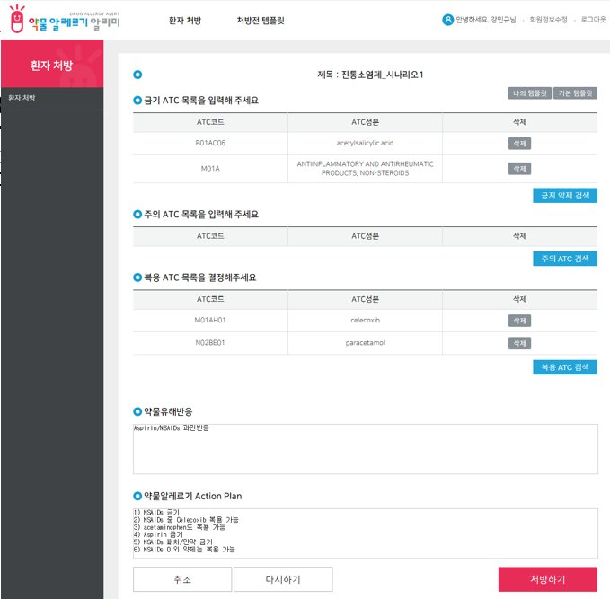
Drugs confirmed in the allergy clinic as contraindicated, to use with caution, or safe to take are entered at the ATC code level, together with an action plan for that patient. Every answer the app gives rests on this record.
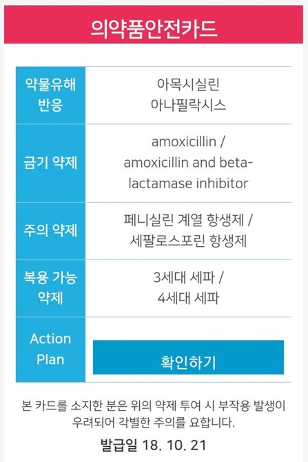
The paper drug safety card the hospital used to hand out now sits on the app screen. The culprit drug and the contraindicated, caution and safe-to-take drugs fit on one screen, so the patient only has to show it at another hospital or a pharmacy.
The rules a patient has to follow are spelled out as numbered sentences. For example: avoid NSAIDs down to patches and eye drops, but celecoxib and acetaminophen are safe to take.
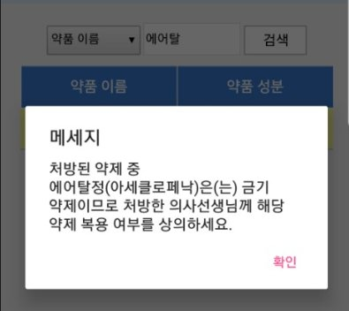
Search a brand name or an ingredient name and the app answers at once whether that drug is safe for the patient. When the drug is contraindicated, it also tells the patient to talk to the prescribing doctor.
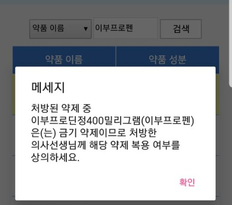
A patient who cross-reacts to every NSAID searches ibuprofen and gets a warning that it is dangerous.
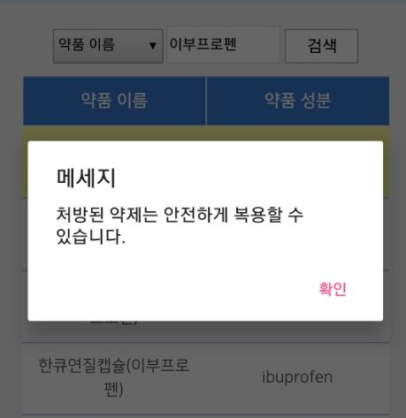
A patient who reacts only to the diclofenac class searches the same ibuprofen and is told it is safe to take. That the answer changes from patient to patient is the heart of this app.
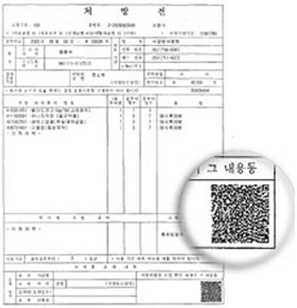
Photograph the QR code at the bottom of a prescription and the app checks every prescribed drug at once for anything the patient is allergic to. UBcare and EDB provided the technical support behind this feature.
The Smart App Award, run by the Korea Internet Professionals Association, is the largest mobile app awards program in Korea. A panel of 3,000 internet professionals judges the apps built that year and picks the best in each category. At the ceremony on December 6, 2018, Prof. Min-Gyu Kang's team in the Division of Allergy and Clinical Immunology at Chungbuk National University Hospital won the Grand Prize in the Health/Medical category. The press release put the app's achievement this way: once patients register their own drug allergy information, they can search in real time whether a given medicine puts them at risk, and they can check a hospital prescription for risky drugs just by photographing it.
A patient who has had a drug allergy or a severe adverse drug reaction meets the same risk again at every new hospital. This project standardized the issuing criteria and the data elements of the drug safety card patients carry, and turned it into a digital drug safety card whose QR code opens the full detail. At the same time we built a standard form for exchanging adverse reaction information between hospitals, plus the sharing platform myadr.care, and ran it in 9 university hospitals. The work ran over three annual phases from February 2022 to December 2024 with support from the Ministry of Food and Drug Safety. Chungbuk National University Hospital was the lead institution, with the Seoul National University R&DB Foundation and Kakao Healthcare as partners. The sharing standard set here was adopted as the standard for the Ministry of Health and Welfare drug allergy information sharing program.
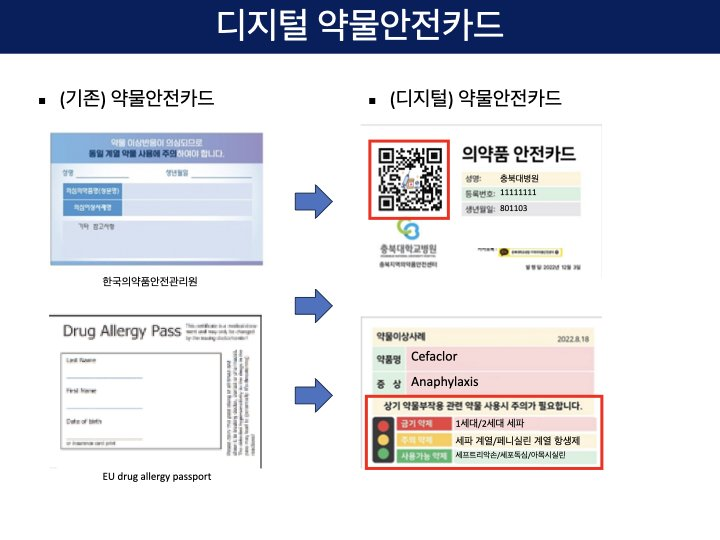
We reviewed the existing paper and plastic drug safety cards and the European Drug Allergy Passport, then designed a new form. A QR code sits on the front, and the card shows the culprit drug and the symptoms along with the contraindicated, caution and safe-to-take drugs, like a traffic light. Opening the QR code brings up the full detail, down to causality and severity.
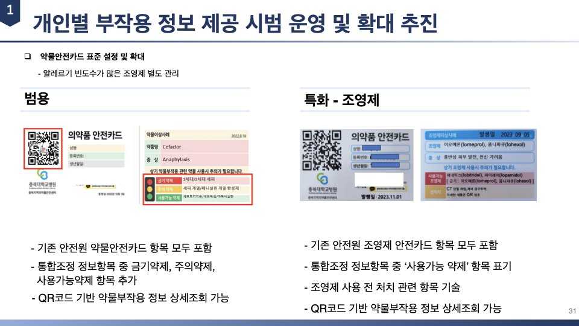
We settled on two forms: a general one carrying every data element of the Korea Institute of Drug Safety and Risk Management (KIDS) drug safety card, and a dedicated one for contrast media, where allergic reactions are common. Depending on what suits the hospital, a site can choose a form that prints the reconciliation information on the card itself, or a form that carries only the adverse event and sends the rest to the QR code.
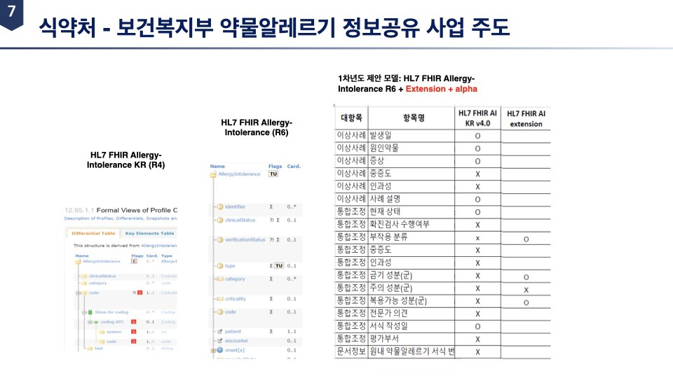
We defined the data elements needed to move adverse reaction information between hospitals and mapped them to HL7 FHIR AllergyIntolerance. On top of the onset date, culprit drug, symptoms, severity and causality of the adverse event, we added reconciliation elements as extensions: contraindicated, caution and safe-to-take drug groups. Adverse event names follow MedDRA and severity follows CTCAE.
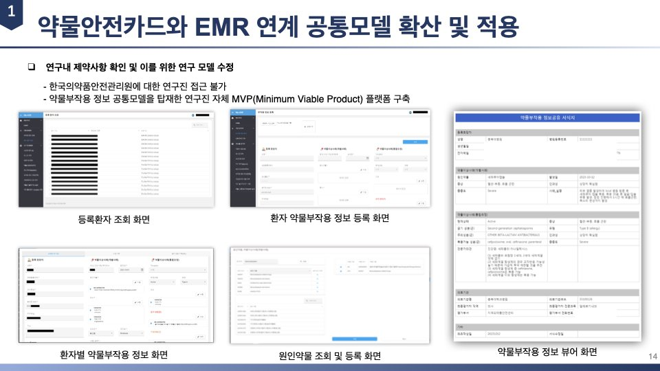
A web platform that carries the standard form as it is. It handles patient registration, culprit drug lookup, and the entry and review of adverse reaction information, and works with KD codes, ATC codes and SNOMED CT codes side by side. A template feature prefills the data elements each institution uses, and from a saved record you can print a PDF card, issue a QR card or send a KakaoTalk alert on the spot. We ran the test server and the service server separately and published the user manual on GitBook.
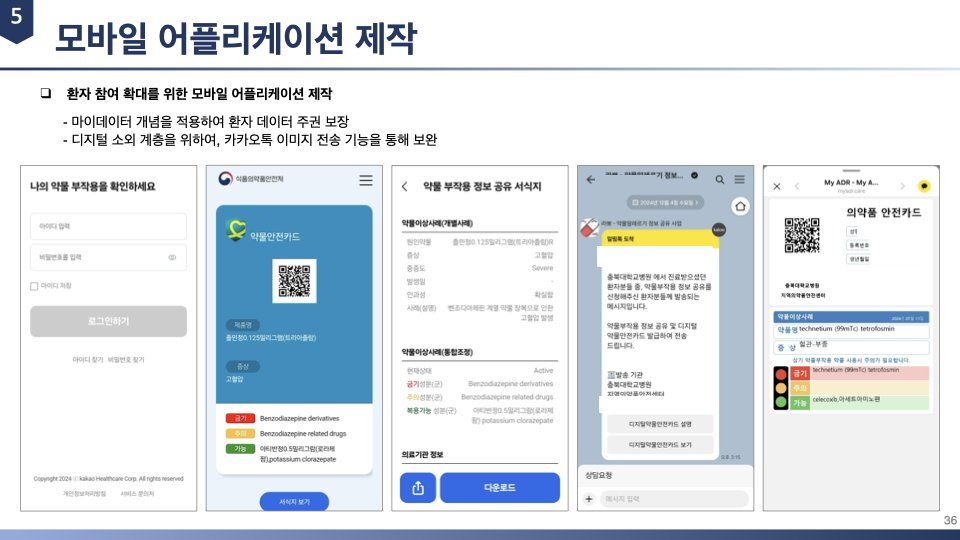
Working with Kakao Healthcare, we built an app on the MyData model, where the patient holds and reads their own adverse reaction record. For patients who find apps hard to use, we added a second route that sends the digital drug safety card image and link by KakaoTalk alert.
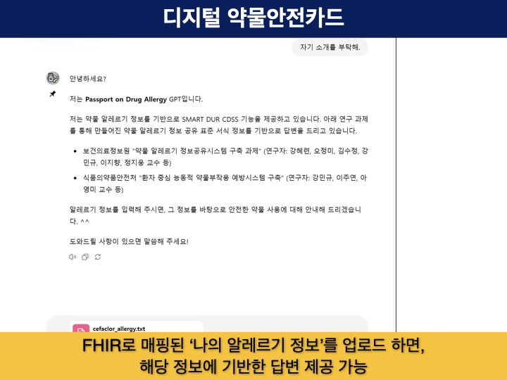
A generative language model demo with the standard form and the shared data elements written into its instructions. Upload an allergy information file mapped to FHIR and it answers from that file, judging a given drug as contraindicated, caution or safe to take by ATC code. It can also translate the card into other languages, Chinese included.
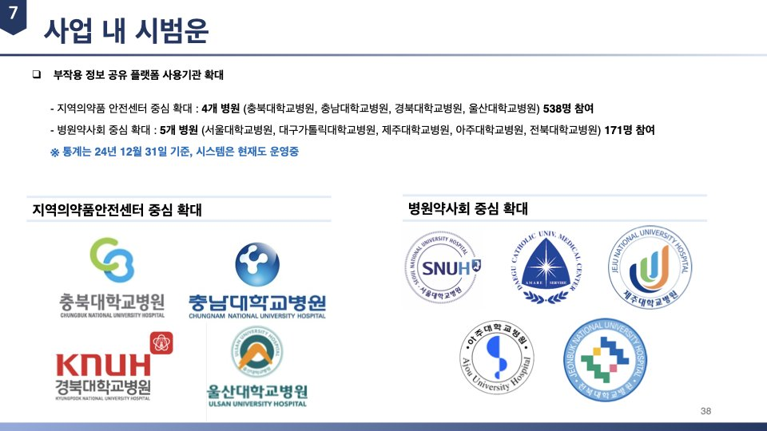
Using the Chungbuk National University Hospital workflow as the reference process, we widened participation along two tracks: the Regional Pharmacovigilance Centers and the Korean Society of Health-System Pharmacists. Card issuing differs by hospital, so we wrote down and fixed a process for each site, from putting a QR sticker on a physical card to sending the link by KakaoTalk alert alone. We also piloted a link that fills in the sharing form inside the EMR and posts it to the platform over an API.
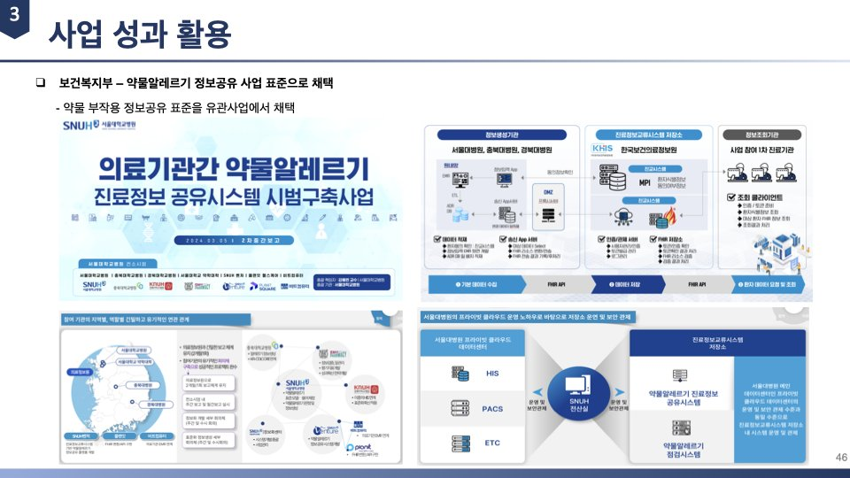
The adverse drug reaction sharing standard built in this project was adopted as the standard for the Ministry of Health and Welfare pilot program on a drug allergy information sharing system between institutions. We also proposed adding drug allergy to the allergy and intolerance section of the Health Information Highway, and an upgrade to the allergy elements of the Korean Core Data for Interoperability (KR-CDI) held by the Korea Health Information Service.
This project ran from February 2023 to December 2025 under the Ministry of Health and Welfare R&D program for MyData technologies. Its strengths are patient-specific polypharmacy analysis and a medication guide tailored to the drugs a patient actually takes. The patient downloads their own diagnosis, prescription, laboratory and health-checkup records from the ‘My Health Record’ app on the Health Information Highway and uploads them to the SMART DUR CDSS at myadr.care. A rule engine computes drug interactions, potentially inappropriate medications for older adults, anticholinergic burden and STOPP criteria risks, and a multi-agent LLM writes the results into a guide the patient can read. A clinician reviews it, the report and safety card go to the patient app ‘Yagirang’, and the patient writes back what happened while taking the drugs. In year 3 we ran the field validation at Chungbuk National University Hospital, Kangbuk Samsung Hospital and NHIS Ilsan Hospital.
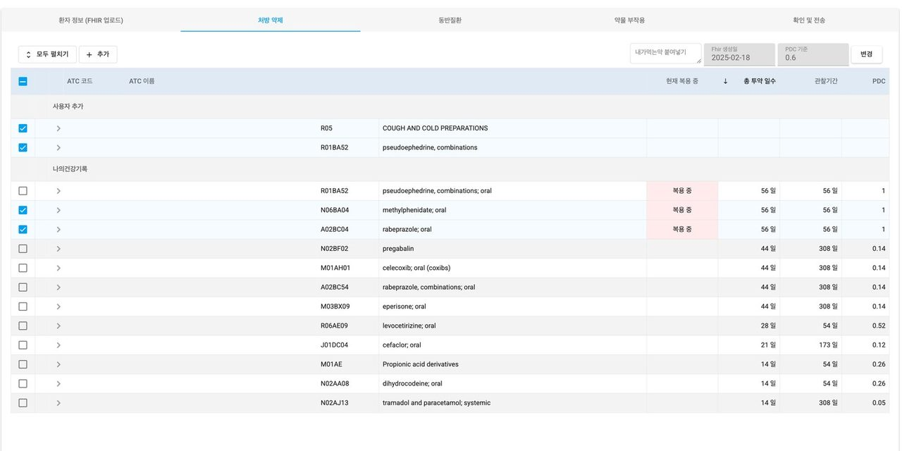
Uploading the My Health Record FHIR file the patient brings fills in the patient profile, and the clinician works through five tabs: baseline polypharmacy questionnaire, prescribed drugs, comorbidities, adverse drug reactions, and review and send. The prescribed drugs tab organizes the past year of medication by ATC code and shows days of supply next to medication adherence (PDC).
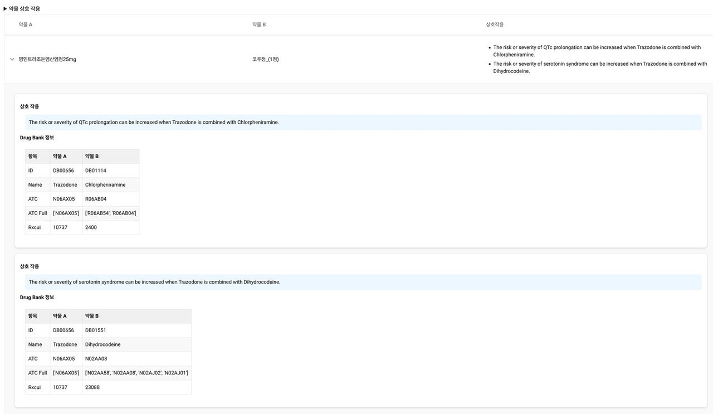
For every combination of the drugs the patient takes now, the system finds interactions from DrugBank evidence and explains them. The ingredient analysis tab shows each product's approved labeling (dosage, contraindications, adverse reactions) in Korean and in English.
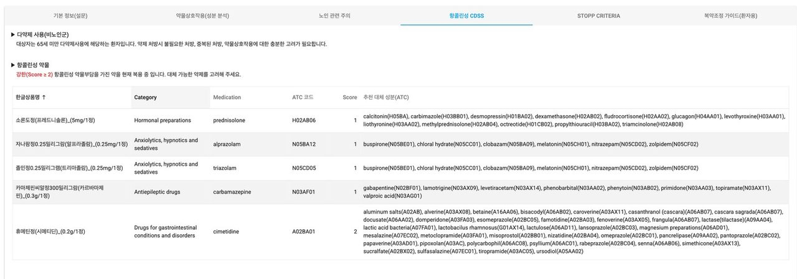
A table lists fall-risk drug classes with their risk level and the drugs whose adherence needs checking. For drugs with a high anticholinergic burden score, the system suggests alternative ingredients by ATC code.
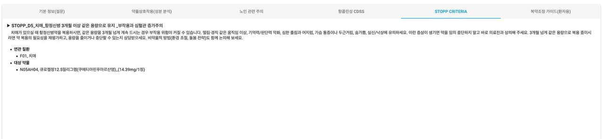
Working from version 3 of the STOPP/START criteria, we registered 146 rules as diagnosis (ICD-10) and drug (ATC) conditions, so that a patient who meets a condition gets the explanation in patient-facing wording. Clinicians can edit the rules and add their own from the settings screen.
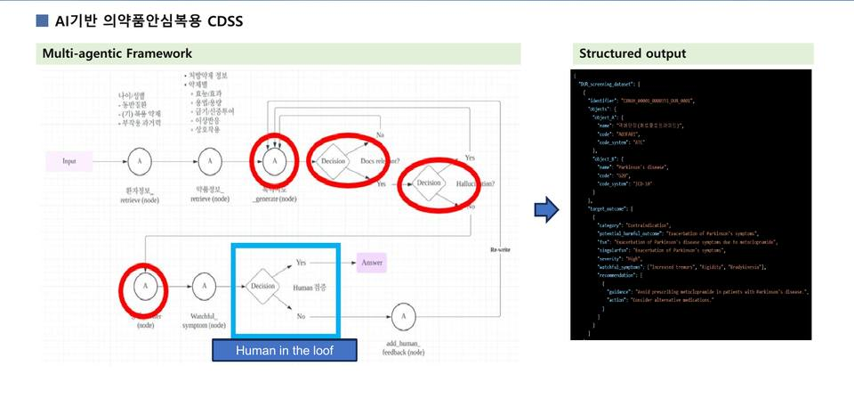
A multi-agent LLM turns the analysis into a polypharmacy reconciliation guide the patient can read. You can pick models and compare them on the same input (LLM evaluation), and nothing reaches the patient until a clinician has reviewed and approved it.
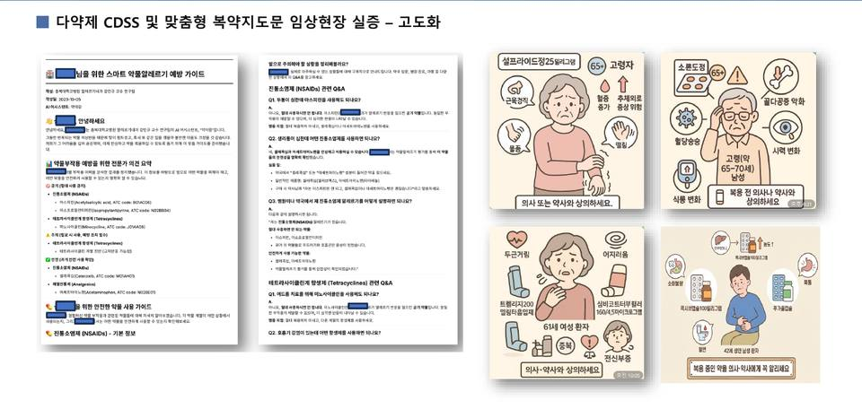
The polypharmacy reconciliation guide (what the current drugs do, drugs needing special care, drugs to keep taking, combinations to watch when taken together, symptoms to look out for, overall recommendations), the Smart Allergy Report (contraindicated, caution and safe to take by drug class, with a Q&A), and personalized medication counseling notes.
The smartphone app patients use. They receive the reports and the safety card, get reminders and keep a medication log, and write down what they went through after taking a drug (e-PRO) to send back to the study team.
A multi-agent system that takes a patient's own adverse drug reaction history and builds a personalized drug allergy prevention guide automatically. It runs on the OpenAI Agents SDK and is written in Python and Streamlit. Four specialist agents run in a mix of sequence and parallel, with a target of under 3 minutes end to end. Input is a FHIR AllergyIntolerance JSON file or free text, and drug classification refers to a WHO ATC code mapping file.
Clinical skills: cephalosporins, fluoroquinolones, penicillins, macrolides, NSAIDs, antipyretic analgesics (acetaminophen and others), antihistamines (first generation and non-first-generation kept apart), iodinated contrast media · Principles: no guessing - the system uses contraindicated, caution and safe-to-take information only when it is stated explicitly, never the general knowledge of the LLM., When that information is absent, only the culprit drug is marked contraindicated and nothing else is judged., ATC code required - every drug is written as 'Korean name (English name, ATC code)', and when the code is unknown only the drug name is written., Class-level explanation - the text explains drug classes, not individual drugs., No merging of categories - different drug classes are never combined into one., No duplication - when the same class appears under both contraindicated and caution, it is handled in a single combined section., THINK - PLAN - ACT - REFLECT - every agent follows this sequence explicitly., Admit the limits - when ATC mapping fails, the item is marked 'cannot verify' instead of being skipped.
On the CDSS side, we built automated evaluation across LLM models in year 2 and compared models on five metrics: Relevance Precision, Relevance Recall, Accuracy, Completeness and Helpfulness. Alongside that we ran the agents' own self-scoring (Validity, Relevance and Quality, Overall Assessment) and a human in the loop step in which clinicians compared the system output and left feedback. The SDAP repository has unit tests and integration tests for each agent, and it states its performance targets: processing time, an ATC mapping success rate of 90 percent or higher, and 100 percent report completeness. The performance table in the SDAP repository lists target values only; the measured figures are blank. The number of reports actually produced for patients is tracked on the CDSS field-validation side rather than in this repository, and the study enrollment screen in the year 3 review materials is anonymized, so the counts cannot be read.
For a drug allergy record confirmed at one hospital to be readable at another, you first have to decide what is exchanged and in what format. This pilot program, commissioned by the Korea Health Information Service, was carried out by the Seoul National University Hospital (SNUH) consortium, with Prof. Hye-Ryun Kang of the SNUH Division of Allergy and Clinical Immunology as overall lead. I took part as a co-investigator for Chungbuk National University Hospital. Phase 1 set the standard data elements for drug allergy information sharing, mapped them onto the HL7 FHIR AllergyIntolerance resource, and stood up a FHIR repository on the Health Information Exchange system so that information created at tertiary hospitals could be retrieved at primary care clinics. Phase 2 moved the sharing route to the Health Information Highway, so patients could check their own information in the My Health Record app and hand it to their clinicians, and the number of participating hospitals grew to 8. My part was writing the standard form and the value domains, and defining the items the existing FHIR standard did not cover, such as contraindicated, caution and safe-to-take drug groups, as extensions reflected in KR-Core and the Korean Core Data for Interoperability (KR-CDI).
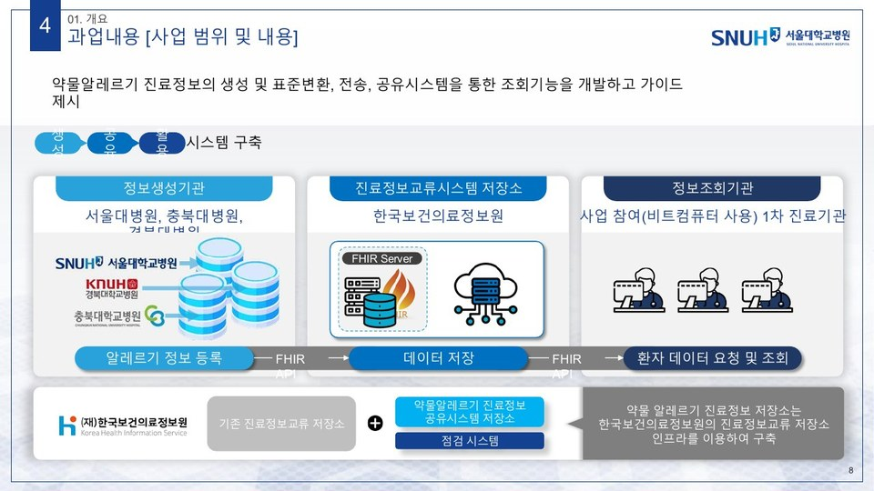
The generating hospitals (Seoul National University, Chungbuk National University and Kyungpook National University hospitals) push allergy records through a FHIR API into the Health Information Exchange repository at the Korea Health Information Service, and the primary care clinics taking part in the program read them back through the same API. We built no separate infrastructure: the drug allergy sharing repository and its checking system sit on top of the existing Health Information Exchange repository.
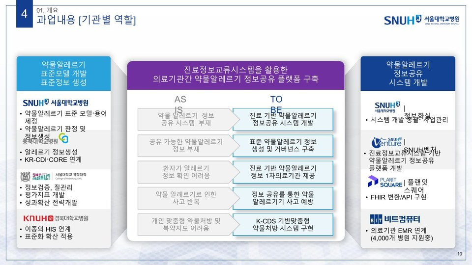
Seoul National University, Chungbuk National University and Kyungpook National University hospitals and the Seoul National University College of Pharmacy developed the standard model and generated the standard records. The SNUH Office of Information, SNUH Venture, Planit Square and BIT Computer built the systems. Chungbuk National University Hospital's share was generating the allergy records and mapping them to KR-CDI and KR Core.
The adverse event area holds onset date, culprit drug and drug code, symptoms and symptom codes, severity, causality and a case description. The reconciliation area holds current status, reaction type, severity, causality, whether confirmatory testing was done, the contraindicated, caution and safe-to-take ingredients or ingredient groups, and the specialist's opinion. Document information carries the institution and the assessor, patient information carries the registered patient, and together these four areas make up the form.
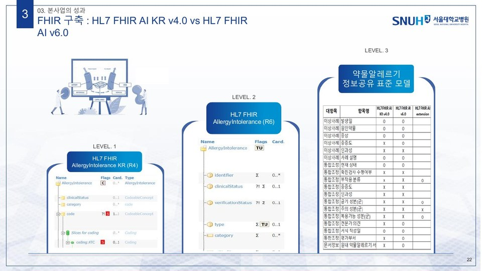
I sorted the elements that existing standards cannot hold into three layers. Layer 1 is HL7 FHIR AllergyIntolerance KR (R4), layer 2 is AllergyIntolerance R6, and layer 3 is the drug allergy information sharing standard model, which defines the elements found in neither standard as extensions. Causality, whether confirmatory testing was done, the contraindicated, caution and safe-to-take ingredients or ingredient groups, and the specialist's opinion are the elements newly defined as extensions.
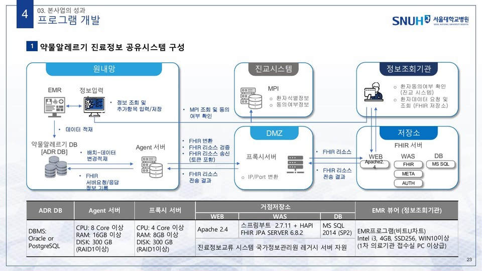
Inside the hospital network, the ADR database and an agent server handle FHIR conversion and resource validation, then send the data through a proxy server in the DMZ to the FHIR server at the regional repository. Patient identification and consent checks run on the MPI of the Health Information Exchange system, and the receiving institutions read the consenting patients' data in their EMR viewer. We ran integration tests on nine scenarios and passed all of them.
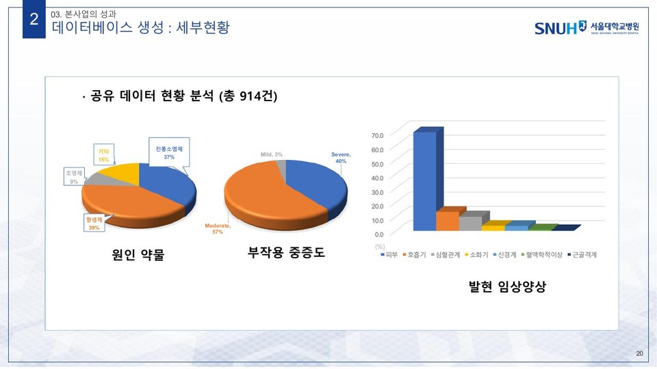
We did not use spontaneous reports as they came in. Allergists re-assessed every case rated probable or higher for causality and moderate or worse in severity, and picked what to share. Of the 914 cases collected in the first program, 39% involved antibiotics, 37% NSAIDs and 9% contrast media; 57% were moderate and 40% severe. Four advisory meetings, with allergists from primary care institutions and community pharmacists, reviewed the sharing screens and their contents.
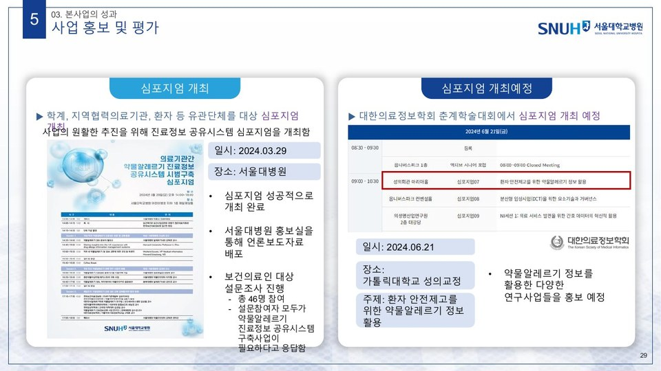
On March 29, 2024 we held a symposium at Seoul National University Hospital for academics, partner institutions in the region and patient groups. All 46 health professionals who attended said the system needed to be built. On June 21, 2024 we ran a session titled 'Using drug allergy information to improve patient safety' at the spring conference of the Korean Society of Medical Informatics, and we spread the word through the Korean Drug Allergy Research Consortium (KoDARC) newsletter and a patient leaflet.
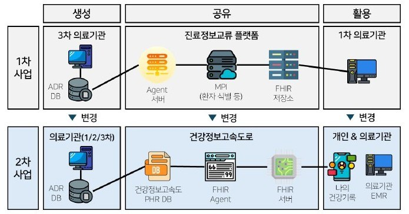
In the first program clinicians had to obtain consent from each patient themselves, and only the 10 clinics that had modified their EMR could look the records up. The second program switched the sharing route to the Health Information Highway: for patients who had already completed the consent process, records move from the hospital ADR database to the PHR database, and patients pull them up themselves in the My Health Record app and show them to their clinicians. Data generation also widened from tertiary hospitals to institutions at every level of care.
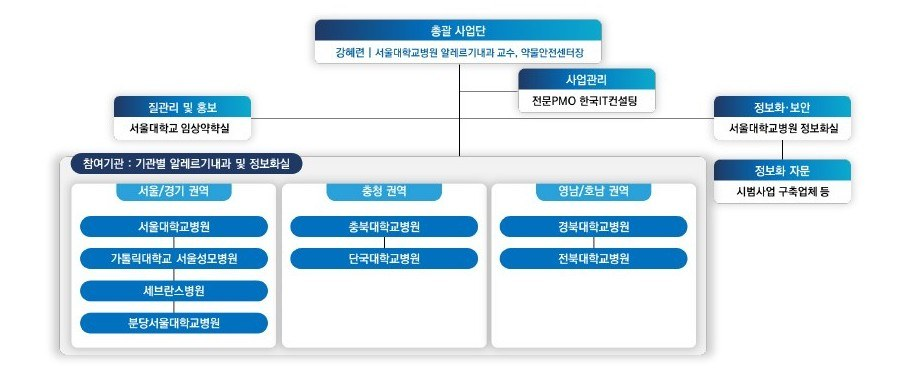
Eight hospitals took part: Seoul and Gyeonggi (Seoul National University Hospital, Seoul St. Mary's Hospital of the Catholic University of Korea, Severance Hospital, Seoul National University Bundang Hospital), Chungcheong (Chungbuk National University Hospital, Dankook University Hospital) and Yeongnam and Honam (Kyungpook National University Hospital, Jeonbuk National University Hospital). A data generation council and an informatics council ran separately and met fifteen times between August 2024 and March 2025 to align cases across institutions and settle a protocol for managing contrast media hypersensitivity.
Sponsor-initiated trials (SIT), post-marketing surveillance, and investigator-initiated studies. These are the trials I have run in the Division of Allergy and Clinical Immunology at Chungbuk National University Hospital, in patients with asthma, allergic rhinitis, urticaria and drug allergy.
| Period | Trial | Role |
|---|---|---|
| 2025.6 - Ongoing | Tozorakimab Uncontrolled asthmaUMBRIEL: A phase 2b, multicenter, double-blind, placebo-controlled, dose-ranging trial evaluating the efficacy and safety of Tozorakimab in adults whose asthma is not controlled on medium- to high-dose inhaled corticosteroids (ICS) | PI |
| 2024.5 - 2025.11 | Verekitug (UPB-101) Severe asthmaUPB-CP-04: A phase 2, randomized, double-blind, placebo-controlled, multicenter, dose-ranging trial evaluating the efficacy and safety of Verekitug (UPB-101) in adults with severe asthma | PI |
| 2024.5 - Ongoing | CHF6001 (dry powder inhaler) Uncontrolled asthmaA 52-week, randomized, double-blind, multicenter, two-arm parallel-group trial evaluating the efficacy and safety of adding CHF6001 dry powder inhaler (3200 μg total per day) to maintenance therapy with medium- or high-dose inhaled corticosteroids plus a long-acting beta2-agonist | PI |
| 2024.5 - Ongoing | UIC202007 / UIC202306 combinationA multicenter, randomized, double-blind, active-controlled, parallel-group, phase 3 trial evaluating the efficacy and safety of UIC202007/UIC202306 given in combination | PI |
| 2023.7 - 2024.7 | Fexuclue 40 mg (fexuprazan) Chronic cough from gastroesophageal reflux diseaseA multicenter, parallel-group, double-blind, randomized, active-controlled, investigator-initiated phase 4 trial evaluating the efficacy and safety of Fexuclue 40 mg in patients with chronic cough from gastroesophageal reflux disease | PI |
| 2022.6 - 2023.2 | GCWB1001 (Lactobacillus plantarum) Respiratory healthA 12-week, multicenter, randomized, double-blind, placebo-controlled trial evaluating the efficacy and safety of GCWB1001 for respiratory function | PI |
| 2018.1 - 2019.4 | NVP-1703 (probiotic) Allergic rhinitisA 4-week, multicenter, double-blind, randomized, placebo-controlled trial evaluating the efficacy and safety of NVP-1703 in allergic rhinitis | PI |
| Period | Trial | Role |
|---|---|---|
| 2022.4 - 2024.10 | EnerzairA 24-week, prospective, open-label, multicenter, single-arm regulatory post-marketing surveillance (rPMS) study of Enerzair in routine clinical practice | PI |
| 2021.10 - 2022.12 | Monterizin capsules Asthma, perennial allergic rhinitisPost-marketing surveillance of Monterizin capsules to assess safety and efficacy in patients with both asthma and perennial allergic rhinitis | PI |
| 2020.12 - 2023.12 | Dupixent (dupilumab) AsthmaPost-marketing surveillance of Dupixent (dupilumab) in Korean patients with asthma | PI |
| 2019.6 - 2021.12 | Cinqair (reslizumab)Post-marketing surveillance to assess the safety and efficacy of Cinqair (reslizumab) | PI |
| 2019.5 - 2021.12 | Xolair (omalizumab)Post-marketing surveillance of Xolair prefilled syringe 150 mg/1 mL and 75 mg/0.5 mL and Xolair injection 150 mg | PI |
From a personalized system for preventing drug allergy to the MyData Safe Medication system, this is the record of research turned into inventions. 7 registered, 4 filed.
An information processing server and method that reads a patient's care and medication records together with their side-effect history and delivers a personalized safe medication service. This is the core claim behind the MyData-based Safe Medication system.
The system identifies a drug from a photo of its package taken with a smartphone camera, takes in the side effects the user reports after taking it, and updates that person's probability of a reaction using incentive and disincentive constants. For combination products it calculates a separate probability for each ingredient, and it calculates blood concentrations to tell symptoms of the illness apart from drug side effects.
A method and apparatus that learns cumulatively from the drugs a person has taken and from every episode with or without a reaction, then updates the probability of a reaction for each ingredient. It factors in reward and reverse-reward constants, reaction intensity, and the residual blood concentration of earlier drugs to tell symptoms of the illness apart from drug side effects. A divisional application of 10-2020-0187377.
A method and apparatus that learns from a person's own dosing experience and side-effect history and computes, in real time, that individual's probability of a reaction rather than a statistical average. It analyzes combination products ingredient by ingredient, separates symptoms of the illness itself from drug side effects, and grows more accurate as dosing experience accumulates.
Using a personalized side-effect database, this method and apparatus automatically flags the drugs on a prescription that carry a high risk of a reaction and recommends safe alternatives with the same therapeutic effect, producing an optimized prescription. It includes causality assessment with the WHO-UMC and Naranjo scales and a self-learning loop fed by the patient's feedback after each dose.
A drug entered by brand name, ingredient name, barcode or QR code is converted to its WHO standard ATC code, and the person's drug allergy risk is graded on three levels: contraindicated, caution, and exception. It breaks combination products down by ingredient and finds other formulations that use the same ingredient, preventing cross-reactive allergic reactions.
The Chinese counterpart of Korean registration 10-2656669 (application 10-2020-0187377). It learns from a person's dosing experience and side-effect history to compute that individual's probability of an adverse reaction.
The Chinese counterpart of Korean registration 10-2609482 (application 10-2022-0122884). It uses personalized side-effect data to detect risky drugs in a prescription and recommend safe alternatives.
The US counterpart of Korean registration 10-2609482 (application 10-2022-0122884). A response to the first office action has been filed and the application is under examination. It uses personalized side-effect data to detect risky drugs in a prescription and recommend safe alternatives.
The PCT international application for Korean registration 10-2609482 (application 10-2022-0122884). It uses personalized side-effect data to detect risky drugs in a prescription and recommend safe alternatives.
The PCT international application for Korean registration 10-2656669 (application 10-2020-0187377). It learns from a person's dosing experience and side-effect history to compute that individual's probability of an adverse reaction.
The epidemiology of adverse drug reactions and pharmacovigilance, the clinical and genetic sides of asthma and allergy, and digital health. More than 60 papers since 2012, h-index 26 (September 2026, excluding papers by other authors). The full list is on Google Scholar and PubMed.
Director-at-large and education committee member, Korean Society of Health Informatics and Statistics (2023-). Editorial board member, Korean Society for Pharmacoepidemiology and Risk Management. Investigator in the Korean Drug Allergy Research Consortium (KoDARC). Full member of the Korean Academy of Asthma, Allergy and Clinical Immunology, the Korean Association of Internal Medicine and the Korean Society of Medical Informatics, and member of the European Academy of Allergy and Clinical Immunology.
I am looking for students and researchers who are strong in programming, big data analysis and vibe coding.
My goal is to build research that matters through collaboration across disciplines, and to bring precision medicine one step closer. I welcome clinical trials, data studies and advisory work on bringing AI into hospitals. I am in Boston until February 2027. Email reaches me fastest.
A vision-language model (VLM) pipeline in which two rater agents independently score how a patient uses an inhaler. The GINA 2024 recommendations set the scoring standard, and inter-rater agreement checks reliability. It is my first project underway in Boston.
Automatic drafting of discharge summaries and referral letters, a pre-visit intake chatbot that reads patient-reported symptoms together with the medical record, a chatbot for public inquiries, and automated IT reporting. Built with 10 staff certified as 2025 ‘AI Champions’ by the Ministry of the Interior and Safety.
○○○, you are taking six medicines together. Here is what we found in the medication history and diagnoses pulled from your My Health Record app.
| Medicine | What it is for |
|---|---|
| Amlodipine | Lowers blood pressure |
| Metformin | Controls blood sugar |
| Aspirin 100 mg | Prevents blood clots |
| Diphenhydramine | Antihistamine that helps you sleep |
Amlodipine and metformin work only if you take them at the same time every day, even when you have no symptoms.
Tell us right away about black stools, dizziness or falls, or cold sweats and shaky hands (low blood sugar).
Of the six medicines, one is best changed, two should be kept up, and one combination should be avoided. We will go over this together at your next visit.
Hello, ○○○. Repeated adverse drug reactions must have been hard on you. We have put together a personalized guide so you can take your medicines with confidence.
| Category | Medicine | What to note |
|---|---|---|
| Contraindicated | Naproxen (M01AE02) | History of urticaria and angioedema. Never use. |
| Caution | Propionic acid NSAIDs (M01AE) | Cross-reaction possible. Avoid where you can. |
| Safe to take | Acetaminophen, tramadol, celecoxib | Used safely in the past. Safe to take. |